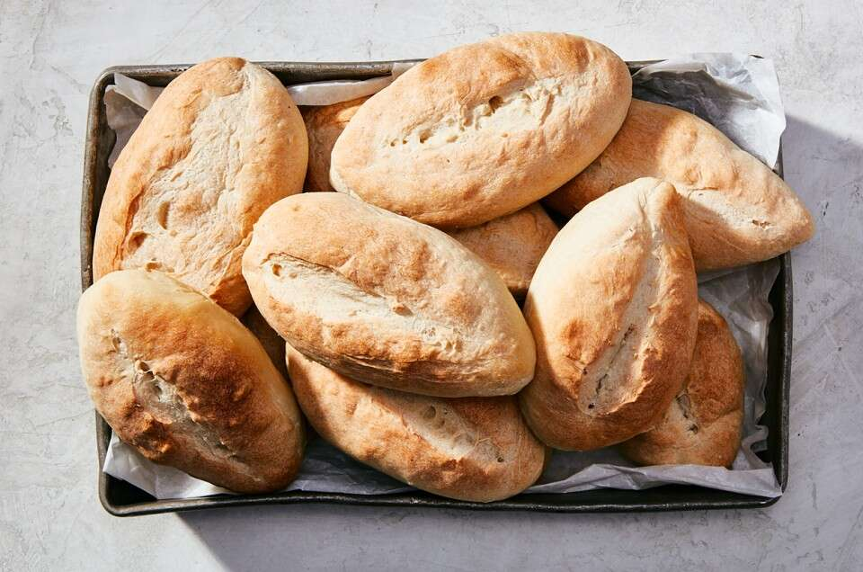

Bolillo is a Mexican bread made from a dough similar to the French baguette. The final product has a crispy crust and a soft crumb, and is formed into a football-shaped loaf. The name of the bread means spindle, referring to a rolling pin used in the preparation of bolillo. Today, bolillo is usually served with eggs and meat, or it can be served as an accompaniment to gazpacho, posole, menudo, or chile verde stew.
Meal prep time : 3 hours 5 minutes
Servings : 6